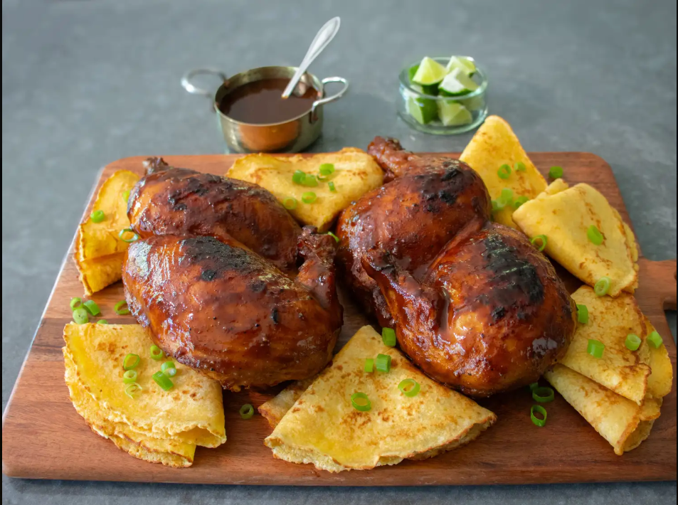

Back to Home
Reverse Barbecue Chicken

Reverse Barbecue Chicken is a cooking method that flips the traditional
process on its head, starting with a gentle oven-bake or indirect
smoking and finishing with a hot grill sear. This technique
guarantees incredibly juicy, tender meat on the inside while
delivering perfectly crispy, caramelized skin and sauce on the outside.
Ingredients
- 1 whole (4 pound) chicken, cut in half
- 1 tablespoon kosher salt
- 1 tablespoon brown sugar
- 1 teaspoon garlic powder
- 1 teaspoon black pepper
- 1 teaspoon smoked paprika
- 1/2 teaspoon cayenne pepper (optional, for heat)
Steps
- Preheat the oven to 325 degrees F (162 degrees C).
- Combine salt, brown sugar, pepper, paprika, garlic powder,
cayenne, and barbecue sauce in a bowl; whisk to combine.
Add chicken halves and toss until thoroughly coated on all sides.
- Transfer chicken halves into a shallow 13x9-inch roasting pan or
baking dish, skin side up. Use a spoon or brush to transfer all
the remaining wet rub from the bowl evenly over the top of the chicken.
- Cover the pan with foil, tenting it slightly so the foil is not
touching the top of the chicken. Crimp the edges very tightly all
around the pan.
- Bake in the preheated oven for 45 minutes. Remove from the oven,
and let rest covered for 1 hour.
- If you want to grill your chicken immediately, use a spatula to
scrape all the wet rub off the chicken skin back into the pan,
and transfer chicken onto a separate clean plate.
- Meanwhile, transfer all the pan juices and wet rub into a small
saucepan. Bring to a boil over medium heat. Cook for a few minutes,
stirring occasionally, until the sauce reduces slightly and starts
to thicken. Turn off heat and reserve until needed for basting.
- IPreheat a charcoal grill to medium-high and lightly oil the grate.
Make sure your grill is evenly heated. I like to space out
my briquettes to achieve even grilling.
- Place the chicken skin side down on the preheated grill and cook
until skin starts to brown and slightly char, 2 to 3 minutes.
Turn over and brush skin side with reserved sauce while cooking
for 5 minutes.
- Turn chicken over again, and while the skin side browns for
another few minutes brush additional sauce over the side facing
up. Turn chicken back over, and brush over more sauce, and
repeat these steps until the chicken is completely heated
through and the skin is as brown as you like. An instant-read
thermometer inserted into the thickest part of the thigh,
near the bone, should read 145 degrees F (63 degrees C).
Serve immediately with additional sauce if desired.
- For the overnight method, remove the foil after the chicken has sat
out after cooking for 1 hour. Brush as much of the wet rub and pan
juices from the bottom of the pan on top of the chicken.
Allow to cool until the chicken is safe enough to rewrap and
transfer into the refrigerator. Refrigerate overnight to allow the
chicken to absorb as much of the flavors of the wet rub as possible.
- The next day, remove the chicken from the refrigerator and scrape
off all the wet rub just like described above. Allow the chicken to
come to room temperature for about 30 minutes while you prepare the
sauce as described above. Follow the same grilling instructions.
Since the chicken will still be cool in the center, the grilling
time will be much longer. Let the chicken sit on the grill with
the skin side up for the majority of the time using the grill
cover to keep the heat in. Occasionally brush sauce on the skin
side and flip it over for a couple minutes, until it's as browned
as you want, then continue cooking with the skin side up until
the chicken is completely heated through and ready to serve,
about 30 minutes total.